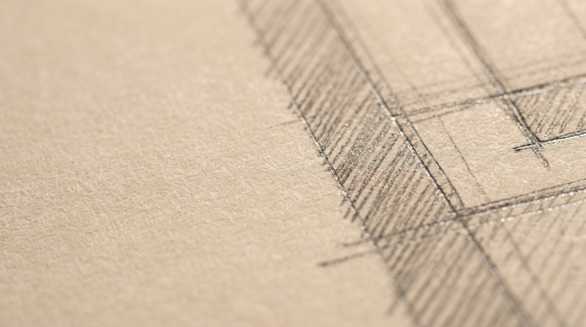

A twelve-person studio working on houses, small cultural buildings and adaptive reuse. Our sheet sets are complete and coordinated, which is why our projects tend to come in near the number they were priced at.

Roughly eight projects at a time. We are not the cheapest and we are honest about that early.
New build and substantial renovation. Typically construction budgets from $900k, where the site or the brief has genuine difficulty in it.
Industrial, agricultural and civic buildings given a second life. The constraint is the interesting part and usually the reason it works.
Small galleries, libraries and community buildings, including competition work and public procurement.
Before you buy a site or commit to a scheme. A short, paid piece of work that regularly saves people a great deal.
“They stayed through construction. That's where the value actually was.”
R. Alvarez · Private house“The feasibility study stopped us buying the wrong site. Best $6k we spent.”
Faye C. · Pre-design“Handled a listed building consent that everyone said was impossible.”
D. Farrow · Adaptive reuse“Best contract administration we've worked with, and we build for a lot of architects.”
Meakin Construction · ContractorFive stages, and we stay through the last one — which is where most of the risk actually sits.
A short paid study: what the site allows, what it will cost, and whether the idea survives contact with reality.
Two or three genuinely different directions rather than one refined proposal. You choose a direction, not a drawing.
Resolved with engineers and costed properly. Permitting runs from here, and we handle it.
Tender, contractor selection and site administration through to completion. We do not hand over drawings and disappear.
A first conversation is free. Bring a set of drawings from anyone and we will show you what a contractor is guessing at in them.
Enquiries for 2027 now open. Feasibility studies available as standalone work.